Battle Plans for Off-map Artillery and Air Force
Off-map Artillery
We’ve created an Artillery Task Force and labeled it “2-5 FA”. Next, we will create a mission by selecting the “Add” button. A mission icon will appear at the border of the map closet to where the task force is positioned off-map as shown in Figure 18.
The first mission will be an “On-Call”, looking at my cheat sheet for my SOPs for Unit Type: “Artillery” and the Combat Situation: “Scoot and Shoot”, to see a copy of my cheat sheet see Figure 56. To set up the SOP for the 2-5 FA select the “Edit” button as illustrated in Figure 57.
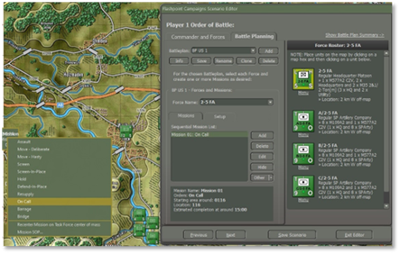
Fig. 57
A popup screen as shown in Figure 58 shows the 2-5 FA Mission Parameters.
To make the changes I will go to the “Edit Mission SOP” button and use “Set SOP” and then to the “Adjust SOP” to make the SOP as it is on my cheat sheet. An example of my Cheat Sheet is shown in Figure 56.
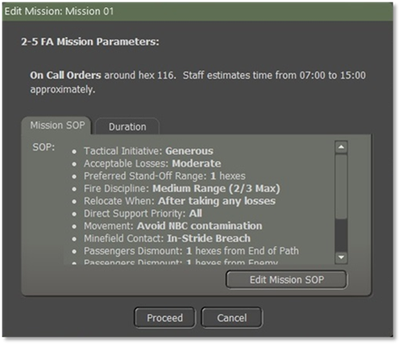
Fig. 58
Once you have made the changes, select the “Apply to Self and All Insubordinates” button to make the changes to all the units in the 2-5 FA as shown in Figure 49. When you select the “Apply to Self and All Insubordinates” button you will get a popup screen as shown in Figure 59.
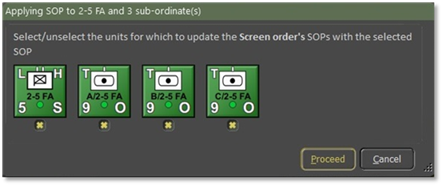
Fig. 59
For the Duration of this mission “On Call”, the duration of 480 minutes (8 hours) is changed to 60 minutes (1 hour) as illustrated by Figure 60. Once done select the “Proceed” button.
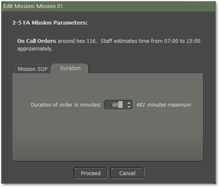
Fig. 60
Next, add a new mission that will start after the one hour is up for the first mission “On call". For this mission, we will do a Barrage mission.
Impacts of Artillery Barrage
Using BPs for Indirect fires is good for representing pre-planned strikes on known or guessed enemy locations or for screening assaults or crossings with smoke and HE.
Use the Artillery Barrage for the attacking side - trying to wear down where the defenders might be - if you think that one side would have enough Int to do these attacks. When you use them, try to give three targets to a Regt/Bn - usually close together. After you set up a couple of rounds of barrages and then give the unit a resupply mission before going to an On-Call mission.
You should make sure that all those missions will be neutralization missions.
Off-map Air Force
After creating an Air Task Force labeled for this example, “52 TFW”, let's assign an Airstrike to 52 TFW, and create a new mission by selecting the “Add” button. A screen will pop up as shown in Figure 61, type in the box “Strike 01”, and select the “Proceed” button.
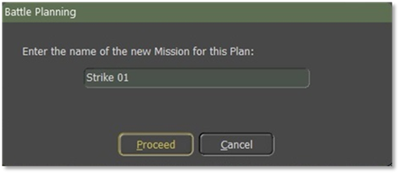
Fig. 61
A mission icon will appear at the border of the map, closest to where the task force is positioned off-map.
That is, on the left map border if the task force is placed west of the map, on the top border if the task force is placed north of the map, etc.
Change the mission to an airstrike by right-clicking on the mission box and selecting “Air Strike” as shown in Figure 62.
A popup screen as shown in Figure 63 where you must place one to three Battle Planning waypoints to where you want the air strikes as shown in Figure 64. When done select the “Commit” button.
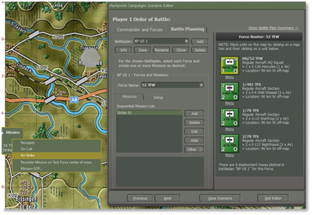
Fig. 62
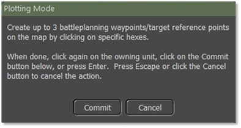
Fig. 63
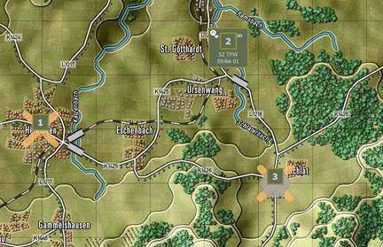
Fig. 64
Add a second mission and make this one a Resupply (aka Re-Organize). Select the “Add” button and add the name “Resupply off-map” in the popup screen as shown when you add “Strike 01” as from Figure 61 and select the “Proceed” button.
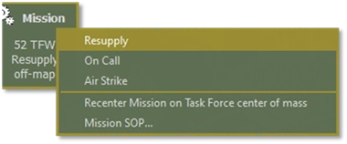
Fig. 65
Right-click in the Misson block and select “Resupply” as shown in Figure 65, and a number one (1) will show in the mission block as shown in Figure 66.
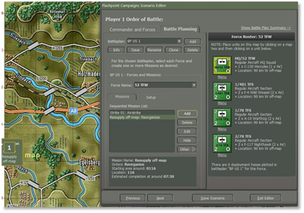
Fig. 66
Proceed with adding another air strike and resupply to replenish loadouts.
Figure 67 shows the (1) “Sequential Mission List” and below is the (2) “Mission Box” first mission showing the Mission name, Orders, Starting area around, targets, and estimated completion time.
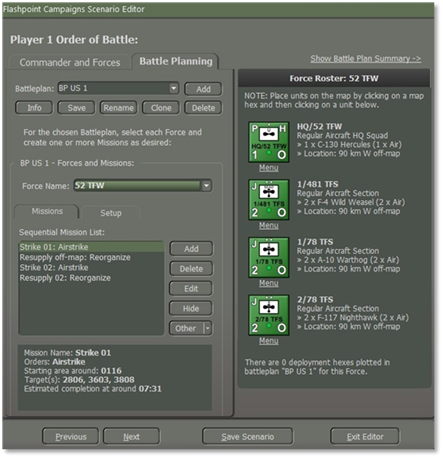
Fig. 67
Impact of Air Strike Waypoints
Airstrike waypoints indicate the vicinity in which the CAS unit will look for and engage targets. Normal CAS units will search for and engage a single “target rich” hex within 1500m (3 hexes), whereas SEAD units will search for and engage a single “Radar target rich” within 5000m (5 hexes).
If the task force contains a single air group, it will be tasked with one (1) single (most promising) of these waypoints (with known nearby enemy units making a waypoint more promising and preferring to the first waypoint if no targets are known.
If the task force contains multiple air groups, each air group will be tasked with one of those (most promising) waypoints, in such a way that the groups are distributed over the waypoints.
Execution of Battle Plan Air Strikes
When an (off-map) group starts an airstrike, the group units are split into SEAD-capable units, airstrike-capable units, and other units. The “other” units won’t participate in the airstrikes.
SEAD units are tasked first, with an airstrike order in the vicinity of the given waypoint, towards known enemy locations. SEAD units are given a large vicinity to engage targets and prefer to engage air search RADAR-equipped targets.
Next, the airstrike units are tasked with airstrike orders.
All air units from the same group are tasked with one (1) minute intervals, to mimic “de-conflicting”.
Note
The typical order delay for an air unit to perform an airstrike is twenty (20) minutes, so expect aircraft to arrive approximately twenty (20) minutes after the start of the airstrike mission.
Execution of Non-Battle Plan with Off-map Air Strikes
Without a battle plan (mission) to execute and all air units supplied and on-call, the AI will attempt to identify rich targets and issue strike missions, followed by a resupply. Again, the typical delay for the airstrike to come is twenty (20) minutes, during which time the rich target might have left.
When using groups, do not put SEAD units into a single group but add them to groups with normal strike aircraft. This way, the SEAD units will precede the normal strike aircraft.
Use an unarmed utility aircraft as a virtual HQ unit, being an unarmed utility aircraft prevents it from joining the airstrikes and may get shot down.